k8s容器编排，自动运维听说很火，听说现在流行生产测试发布一条龙的“全栈ops” 。于是去看了下k8s, 大概一周的k8s入门，只会搭建是不是没救了。为了以后搭建减少时间，特别再次记录下。
准备一个linux系统(一个？？？)
这里我们准备一个linux，系统。这里我选的是kali 。用的是kali-last-snapshot的源（kali-rolling 不习惯了，只有rolling坏了，才怕roll了），准备搭建单节点把玩下，问就是没有钱卖电脑，童靴电脑也不愿借我折腾下。电脑内存大的可以考虑虚拟机多个系统。
k8s环境准备,容器运行时，linux系统设置。
转发 IPv4 并让 iptables 看到桥接流量
cat <<EOF | sudo tee /etc/modules-load.d/k8s.conf
overlay
br_netfilter
EOF
sudo modprobe overlay
sudo modprobe br_netfilter
# 设置所需的 sysctl 参数，参数在重新启动后保持不变
cat <<EOF | sudo tee /etc/sysctl.d/k8s.conf
net.bridge.bridge-nf-call-iptables = 1
net.bridge.bridge-nf-call-ip6tables = 1
net.ipv4.ip_forward = 1
EOF
# 应用 sysctl 参数而不重新启动
sudo sysctl --system
我也不理解，官方说的，就按照官方说的做把。内核参数基本是死的，就这样放着里，也没啥变动吧。。。我蒟蒻！
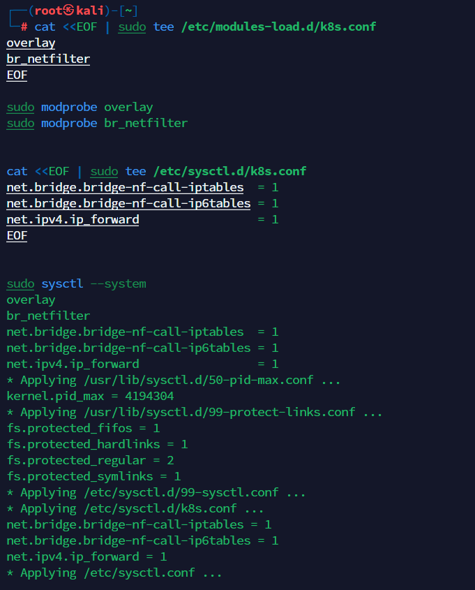
安装容器运行时
- k8s官方地址 ，生产环境的容器运行时介绍 这里我们容器运行时，选containerd。 原因如下：
- k8s放弃docker维护，docker要主懂适配k8s，这样就前途未知。
- CRI-O适配的三方又比少，大多未验证。
- Mirantis定位是docker企业版。
安装 containerd
apt install containerd
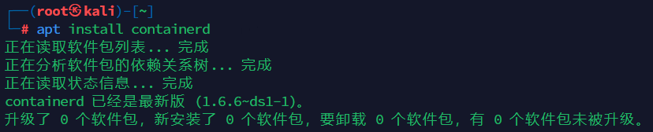
containerd配置
安装了containerd之后，在/etc/containerd/下会有config.toml文件。但是这个apt打包的默文件我们不需要。 我们使用命令重新生成文件:
containerd config default > /etc/containerd/config.toml
我们用vim打开修改2处
- SystemdGroup = true
- 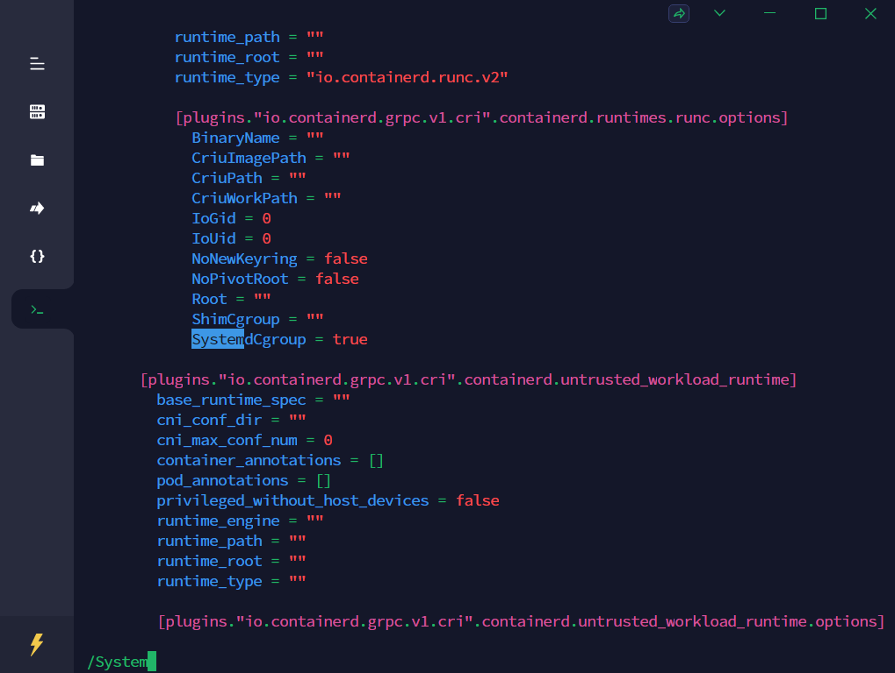
- sandbox_image = “registry.aliyuncs.com/google_containers/pause:3.2”
- 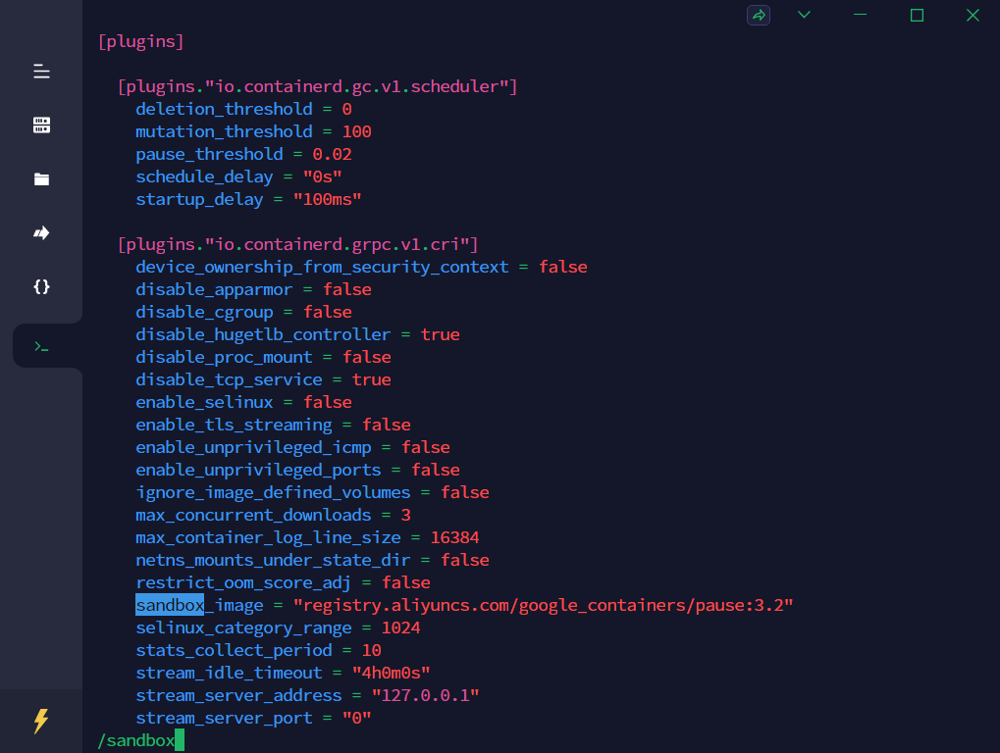 用国内阿里的镜像防止拉不下来，如果你没有修改sandbox，会在创建集群出现找不到主机的问题
linux 关闭swap分区
运行不会有提示。可以用free命令查看
swapoff -a
并且用vim打开/etc/fstab 加上noauto标签。 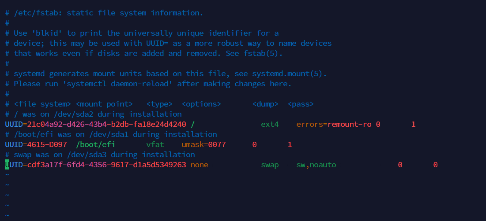
然后用如下命令应用改变
systemctl daemon-reload
不关swap可能会造成启动集群时候无法连接到kubelet。他会显示你的kubelet视乎没有启动
关闭linuxse 。
使用getenforce查看。 使用setenforce关闭
getenforce
setenforce 0
找到/etc/sysconfig/selinux文件在文件中把SELINUX=enforcing ,改为 SELINUX=disabled。 kali本就disable,甚至没有selinux文件。kali的定位就不是渗透的吗，瞬间感觉这很河里？
REBOOT后继续
安装k8s三套件 ，kubelet ，kubeadm ，kubectl
- kubelet是驻守程序
- kubectl是k8s的控制api集合
- kubeadm用来帮助建立k8s集群
下载kube套件。但是kali官方apt源没有，k8s官方推荐是添加谷歌的源，因为不可抗拒力，我们这里添加阿里的源。
# kali额外多安装个gnupg2
apt install gnupg2
apt-get update && apt-get install -y apt-transport-https
curl https://mirrors.aliyun.com/kubernetes/apt/doc/apt-key.gpg | apt-key add -
cat <<EOF >/etc/apt/sources.list.d/kubernetes.list
deb https://mirrors.aliyun.com/kubernetes/apt/ kubernetes-xenial main
EOF
apt-get update
apt-get install -y kubelet kubeadm kubectl
输出太长就不上图了。这里上个版本号。 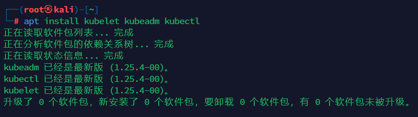
创建集群
kubeadm init \
--apiserver-advertise-address=192.168.0.68 \
--control-plane-endpoint=kali \
--image-repository=registry.aliyuncs.com/google_containers \
--service-cidr=10.44.0.0/16 \
--pod-network-cidr=10.244.0.0/16
address，填本机地址，control填本机的名，image填写阿里云的镜像仓，service，pod-net分别是服务和pod的地址，不要网络地址冲突即可。
详细介绍和更多参数：k8s官网kubeadm init介绍
如果失败了，参数写错了。可以用kubeadm reset再此创建集群。
出现下图说明安装成功： 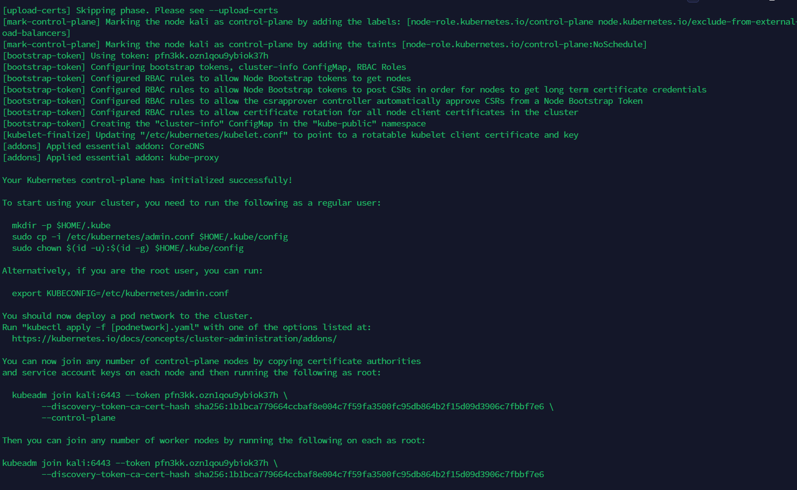
按照他说的，导入下列的命令来管理集群。否者你的kubectl不可用。用户永久有效用
mkdir -p $HOME/.kube
sudo cp -i /etc/kubernetes/admin.conf $HOME/.kube/config
sudo chown $(id -u):$(id -g) $HOME/.kube/config
仅本次登录有效用
export KUBECONFIG=/etc/kubernetes/admin.conf
为你的集群创建网络。
可以选用的网络框架地址
https://kubernetes.io/docs/concepts/cluster-administration/addons/
这里我们用calico。做个示范：
wget https://docs.projectcalico.org/manifests/calico.yaml
我们vim打开下载好的calico.yaml 。修改CALICO_IPV4POOL_CIDR。和pod-network-cidr一样让k8s区分流量。 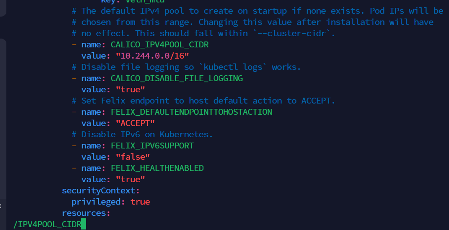
应用calico.yaml
kubectl apply -f calico.yaml
图片展示： 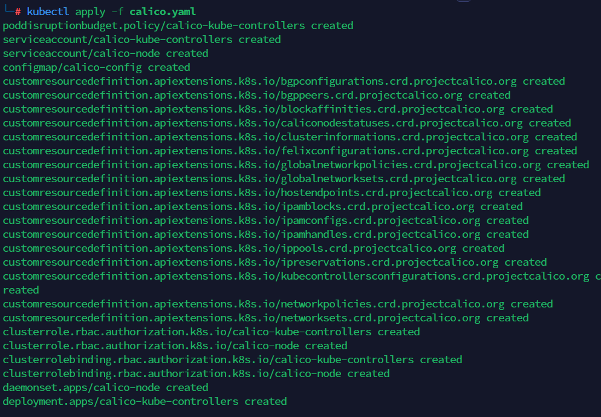
查看容器运行状态
kubectl get pod -A
图片展示： 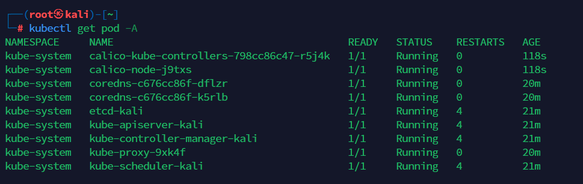
因为是单节点，工作不得交给主节点了。
下面一句是：描述下节点：kali (这里填自己主机名字)
kubectl describe nodes kali
图片展示： 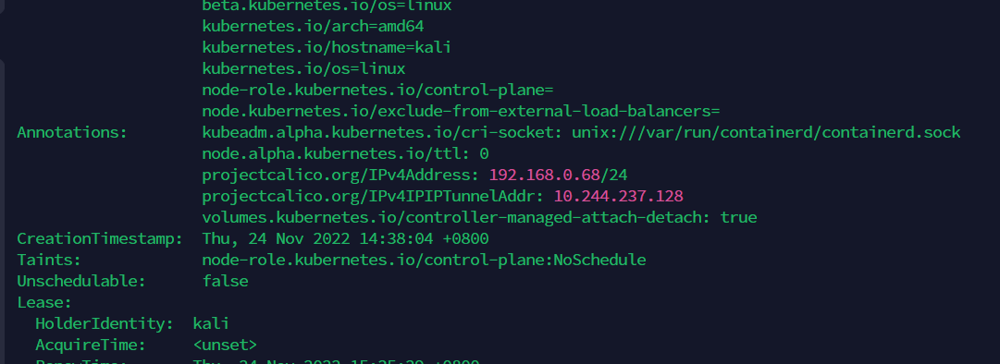
我们看到tainets。我们去掉这个污点。他就不会拒绝我们的工作任务。
kubectl taint nodes kali node-role.kubernetes.io/control-plane:NoSchedule-
在这里顺手给打个节点标记master
kubectl label node kali node-role.kubernetes.io/master=master
安装可视化面板
kubectl apply -f https://raw.githubusercontent.com/kubernetes/dashboard/v2.7.0/aio/deploy/recommended.yaml
直接可以安装。我这里网络不好，我下载好yaml文件再安装。
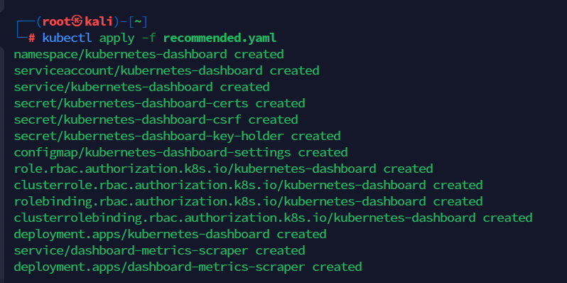
暴露端口
官方推荐是使用代理的方式 官方介绍，这里图方便用的是第二种编辑下service来暴露端口。
下面这句意思是：我要编辑一下，在namespace： kubernetes-dashboard下的 service：kubernetes-dashboard 。n和svc都是简写。
kubectl edit svc kubernetes-dashboard -n kubernetes-dashboard
我们改一处ClusterIP为NodePort，添加一处nodePort为32222。 图片展示： 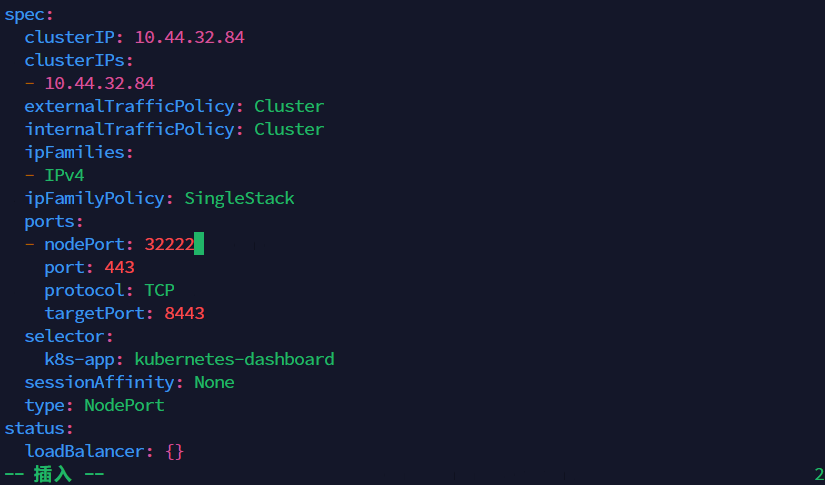
访问一下，试试： 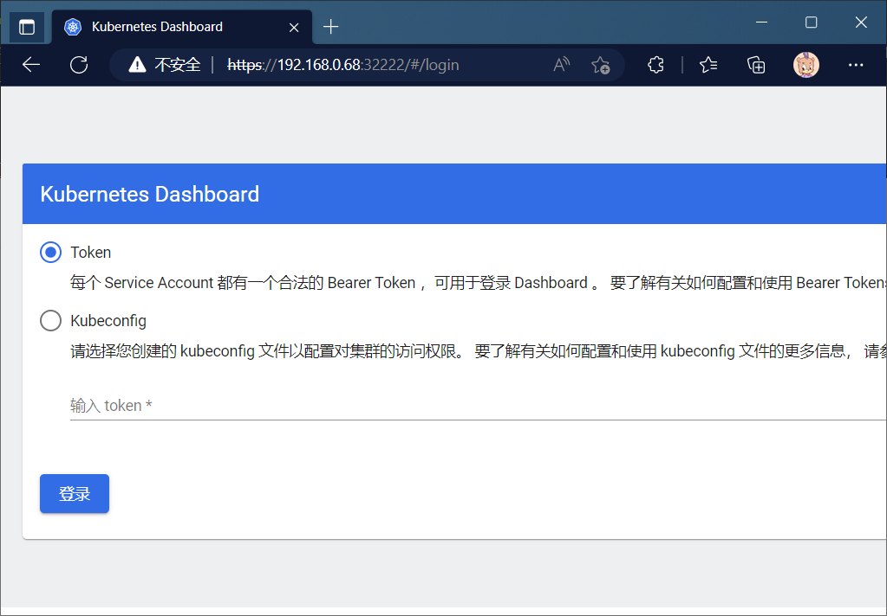
建立登陆账户
在kubernetes-dashboard名称空间中建立叫做admin-user的用户 （顺便提一下，k8s用大量yaml配置和管理，建议yaml文件都保存一下，方便以后学习和配置）
建立admin-user.yaml 内容如下：
apiVersion: v1
kind: ServiceAccount
metadata:
name: admin-user
namespace: kubernetes-dashboard
把admin-user绑定为集群管理，建立bind-admin-user.yaml
apiVersion: rbac.authorization.k8s.io/v1
kind: ClusterRoleBinding
metadata:
name: admin-user
roleRef:
apiGroup: rbac.authorization.k8s.io
kind: ClusterRole
name: cluster-admin
subjects:
- kind: ServiceAccount
name: admin-user
namespace: kubernetes-dashboard
应用它：
kubectl apply -f admin-user.yaml
kubectl apply -f bind-admin-user.yaml
获得token
kubectl -n kubernetes-dashboard create token admin-user
结束语
暂时先写这些把。